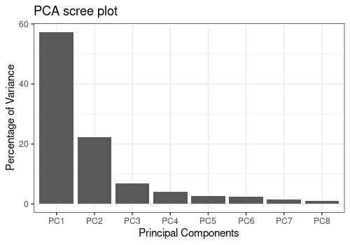
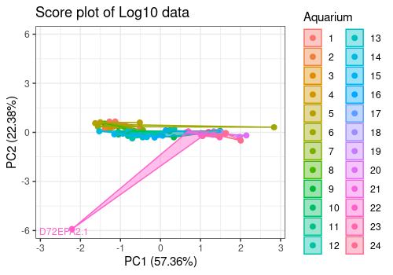
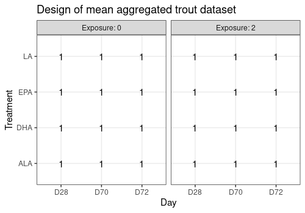
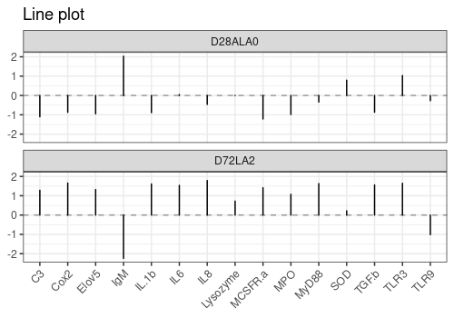
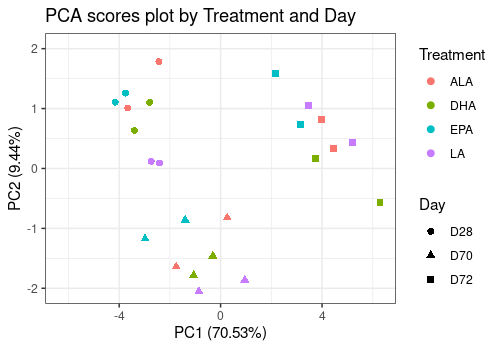
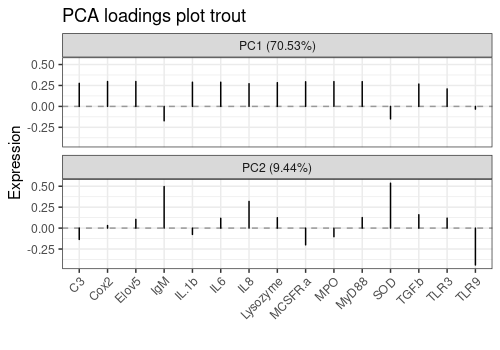
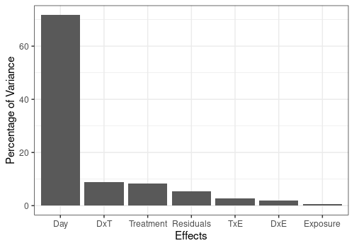
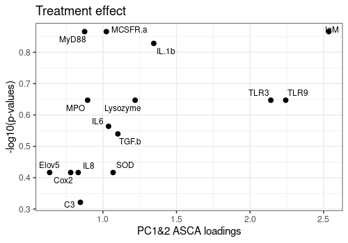

Application of `limpca` on the Trout transcriptomic dataset.
Balanced crossed three way design for fixed factors
Benaiche Nadia, Bernadette Govaerts
March 19, 2024
Source:vignettes/Trout.Rmd
Trout.Rmd
# Install package if necessary (to be used before running the vignette)
# if (!requireNamespace("remotes"))
# install.packages(pkgs="remotes")
# remotes::install_github("ManonMartin/limpca", dependencies = TRUE)
library(ggplot2)
library(limpca)
if (!requireNamespace("gridExtra", quietly = TRUE)) {
stop("Install 'pander' to knit this vignette")
}
library(gridExtra)
if (!requireNamespace("pander", quietly = TRUE)) {
stop("Install 'pander' to knit this vignette")
}
library(pander)
if (!requireNamespace("car", quietly = TRUE)) {
stop("Install 'pander' to knit this vignette")
}
library(car)## Loading required package: carData
knitr::opts_chunk$set(
message = FALSE, warning = TRUE,
comment = NA, crop = NULL,
width = 60, dpi = 50,
fig.width = 5,
fig.height = 3.5, dev = "png"
)Dataset and model presentation
This data set comes from the study of the modulation of immunity in rainbow trout (Oncorhynchus mykiss) by exposure to cadmium (Cd) combined with polyunsaturated fatty acids (PUFAs) enriched diets [Cornet et al., 2018].
The responses were quantified by measuring the modification of the expression of 15 immune-related genes (m = 15) by RT-qPCR (reverse transcription quantitative polymerase chain reaction). The experiment was carried out on 72 trouts and 3 factors were considered in the experimental design:
- Day: Measurements on trouts were collected on days 28, 70 and 72
- Treatment : Four polyunsaturated fatty acid diets: alpha-linolenic acid (ALA), linoleic acid (LA), eicosapentaenoic acid (EPA) and docosahexaenoic acid (DHA)
- Exposure: Trouts were exposed (level = 2) or not (level = 0) to high cadmium concentrations.
This gives a 3 × 4 × 2 factorial design. Each of the 24 trials corresponds to a different aquarium. Three fishes were analysed (3 replicates) for each condition, giving a total of 72 observations.
In this limpca vignette the data are first explored in order to prepare an appropriate data set for ASCA/APCA analysis. Data are first represented by PCA and outliers removed. The remaining observations are then log transformed. Next the data of each aquarium are mean aggregated in order to avoid the inclusion of an aquarium random factor in the statistical model because limpca is not yet able to handle mixed linear models. The data are finally centered and scaled by column.
The estimated model in then a (general) linear model for fixed factors including main effects and all two way interactions. The three way interaction is not included because the aggregated design has no replicate.
A detailed presentation and analysis of this dataset is also available in [Benaiche, 2022].
Data import and exploration
Data import and design visualization
The trout data set is list of three objects : the model
outcomes, the design and the model
formula.
data("trout")
# print number of and response names
cat("\n Nb of Responses : ", ncol(trout$outcomes), "\n ")
Nb of Responses : 15
Responses :
IL.1b IL6 IL8 Lysozyme IgM MCSFR.a MPO TGF.b TLR3 TLR9 MyD88 SOD Elov5 C3 Cox2
# Order responses by alphabetic order
trout$outcomes <- trout$outcomes[, order(dimnames(trout$outcomes)[[2]])]
cat("\n Ordered responses :\n ", colnames(trout$outcomes), "\n ")
Ordered responses :
C3 Cox2 Elov5 IgM IL.1b IL6 IL8 Lysozyme MCSFR.a MPO MyD88 SOD TGF.b TLR3 TLR9
Design factors : Day Treatment Exposure Aquarium
# plot the design with plotDesign function
limpca::plotDesign(
design = trout$design, x = "Treatment",
y = "Day", cols = "Exposure",
title = "Initial design of the trout dataset"
)
This graph confirms that the design is balanced.
Principal Component Analysis of row data
Functions pcaBySvd, pcaScreePlot and
pcaScorePlot are used to take a first look at the data by
PCA.
This PCA shows that the data should be log transformed.
resPCA <- limpca::pcaBySvd(trout$outcomes)
limpca::pcaScreePlot(resPCA, nPC = 8)
limpca::pcaScorePlot(
resPcaBySvd = resPCA, axes = c(1, 2),
title = "Score plot of original data ",
design = trout$design, color = "Aquarium",
points_labs_rn = TRUE
)Warning: ggrepel: 64 unlabeled data points (too many overlaps). Consider
increasing max.overlaps
Log10 transformation of the data and new PCA
Data are log transfomed and a new PCA is applied.
The score plot show clearly two outliers (i.e. fishes D72EPA2.1 and D28EPA2.2). They will removed of the analysis for the next steps.
# Log Transformation
trout_log <- trout
trout_log$outcomes <- as.matrix(log10(trout$outcomes))
# new PCA
resPCA1 <- limpca::pcaBySvd(trout_log$outcomes)
limpca::pcaScreePlot(resPCA1, nPC = 8)
limpca::pcaScorePlot(
resPcaBySvd = resPCA1, axes = c(1, 2),
title = "Score plot of Log10 data ",
design = trout_log$design, color = "Aquarium",
drawShapes = "polygon", points_labs_rn = TRUE
)Warning: ggrepel: 71 unlabeled data points (too many overlaps). Consider
increasing max.overlaps
New PCA without the outliers
New data are created without the 2 outliers and a new PCA performed.
The option polygon of pcaScorePlot function
allows to group data by aquarium. In some aquariums, the 3 fishes shows
very similar results and in other not.
The data are now clean for further analysis
# Remove outliers and create new dataset
trout_clean <- trout_log
outliers <- match(
c("D72EPA2.1", "D28EPA2.2"),
rownames(trout_log$outcomes)
)
trout_clean$outcomes <- trout_log$outcomes[-outliers, ]
trout_clean$design <- trout_log$design[-outliers, ]
# PCA
resPCA2 <- limpca::pcaBySvd(trout_clean$outcomes)
limpca::pcaScreePlot(resPCA2, nPC = 8)
# Score plot Components 1 and 2
limpca::pcaScorePlot(
resPcaBySvd = resPCA2, axes = c(1, 2),
title = "Score plot of Log10 data without outliers (PC 1&2)",
design = trout_clean$design, color = "Aquarium",
drawShapes = "polygon",
points_labs_rn = FALSE
)
# Score plot Components 3 and 4
limpca::pcaScorePlot(
resPcaBySvd = resPCA2, axes = c(3, 4),
title = "Score plot of Log10 data without outliers (PC 3&4)",
design = trout_clean$design, color = "Aquarium",
drawShapes = "polygon", points_labs_rn = FALSE
)
The option polygon of pcaScorePlot function
allows to group data by aquarium. In some aquariums, the 3 fishes shows
very similar results and in other not.
Mean agregation by aquarium and scaling
Data are now mean aggregated by aquarium. This will remove the hierarchy in the design and allow to apply a classical fixed effect general linear model to the data.
Data are next centered and scaled by column. This will give the same importance to each response in the analysis.
# Mean aggregation
mean_outcomes <- matrix(0, nrow = 24, ncol = 15)
mean_design <- matrix(0, nrow = 24, ncol = 3)
y <- list(
trout_clean$design[["Day"]],
trout_clean$design[["Treatment"]],
trout_clean$design[["Exposure"]]
)
for (i in 1:15) {
mean_outcomes[, i] <- aggregate(trout_clean$outcomes[, i], by = y, mean)[, 4]
}
mean_design <- aggregate(trout_clean$outcomes[, 1], by = y, mean)[, c(1:3)]
# Set row and col names
colnames(mean_outcomes) <- colnames(trout_clean$outcomes)
colnames(mean_design) <- colnames(trout_clean$design)[1:3]
trout_mean_names <- apply(mean_design, 1, paste, collapse = "")
rownames(mean_outcomes) <- trout_mean_names
rownames(mean_design) <- trout_mean_names
# Outcomes centering and Scaling
mean_outcomes <- scale(mean_outcomes, center = TRUE, scale = TRUE)
# New data object creation
trout_mean <- list(
"outcomes" = mean_outcomes,
"design" = mean_design,
"formula" = trout$formula
)
# Clean objects
rm(
resPCA, resPCA1, resPCA2, y, mean_design, mean_outcomes,
trout_mean_names
)Exploration of aggregated data
Aggregated data are now explored.
Design
Note that there is no replicate in this new design. There is only one observation (i.e. one aquarium) for each of the 24 factor combinations.
| Day | Treatment | Exposure | |
|---|---|---|---|
| D28ALA0 | D28 | ALA | 0 |
| D70ALA0 | D70 | ALA | 0 |
| D72ALA0 | D72 | ALA | 0 |
| D28DHA0 | D28 | DHA | 0 |
| D70DHA0 | D70 | DHA | 0 |
| D72DHA0 | D72 | DHA | 0 |
limpca::plotDesign(
design = trout_mean$design,
title = "Design of mean aggregated trout dataset"
)
Example of lineplot of the responses for two
observations
limpca::plotLine(trout_mean$outcomes,
rows = c(1, 24),
xaxis_type = "character", type = "s"
) +
ggplot2::theme(axis.text.x = element_text(angle = 45, hjust = 1))
PCA aggregated data
resPCA_mean <- limpca::pcaBySvd(trout_mean$outcomes)
pcaScreePlot(resPCA_mean, nPC = 6)Score plots
The three score plots below show clearly that the Day is the more important effect.
limpca::pcaScorePlot(
resPcaBySvd = resPCA_mean, axes = c(1, 2),
title = "PCA score plot by Exposure and Day",
design = trout_mean$design,
shape = "Exposure", color = "Day",
points_labs_rn = FALSE
)
limpca::pcaScorePlot(
resPcaBySvd = resPCA_mean, axes = c(1, 2),
title = "PCA scores plot by Treatment and Day",
design = trout_mean$design,
shape = "Day", color = "Treatment",
points_labs_rn = FALSE
)
limpca::pcaScorePlot(
resPcaBySvd = resPCA_mean, axes = c(1, 2),
title = "PCA scores plot by Exposure and Treatment",
design = trout_mean$design,
shape = "Treatment", color = "Exposure",
points_labs_rn = FALSE
)1D Loading plots
limpca::pcaLoading1dPlot(
resPcaBySvd = resPCA_mean, axes = c(1, 2),
title = "PCA loadings plot trout", xlab = " ",
ylab = "Expression", xaxis_type = "character", type = "s"
) +
ggplot2::theme(axis.text.x = element_text(angle = 45, hjust = 1))
2D Loading plots
This 2D loading plot allows already to observe that most responses are correlated with each others. Igm, SOD and TLR9 behave quite differently.
limpca::pcaLoading2dPlot(
resPcaBySvd = resPCA_mean, axes = c(1, 2),
title = "PCA loadings plot trout", addRownames = TRUE
)
Scatterplot matrix of all 15 responses
The plotScatterM function allows to visualize the 2 by 2
relation between all (or some of) the responses simultaneously and
choose different markers and colors above and below the diagonal
according to factor levels. Strong relations between expressions are
confirmed here for most genes.
limpca::plotScatterM(
Y = trout_mean$outcomes, cols = c(1:15),
design = trout_mean$design,
varname.colorup = "Day",
vec.colorup = c("CadetBlue4", "pink", "orange"),
varname.colordown = "Day",
vec.colordown = c("CadetBlue4", "pink", "orange"),
varname.pchup = "Treatment",
varname.pchdown = "Exposure"
)
GLM decomposition
The estimated model is the following :
outcomes ~ Day + Treatment + Exposure + Day:Treatment + Day:Exposure + Treatment:Exposure
Since the design has only one replicate, the three way interaction has been removed because it is confounded with residuals.
Model matrix X generation
resLmpModelMatrix <- limpca::lmpModelMatrix(trout_mean)
pander::pander(head(resLmpModelMatrix$modelMatrix))| (Intercept) | Day1 | Day2 | Treatment1 | Treatment2 | Treatment3 | |
|---|---|---|---|---|---|---|
| D28ALA0 | 1 | 1 | 0 | 1 | 0 | 0 |
| D70ALA0 | 1 | 0 | 1 | 1 | 0 | 0 |
| D72ALA0 | 1 | -1 | -1 | 1 | 0 | 0 |
| D28DHA0 | 1 | 1 | 0 | 0 | 1 | 0 |
| D70DHA0 | 1 | 0 | 1 | 0 | 1 | 0 |
| D72DHA0 | 1 | -1 | -1 | 0 | 1 | 0 |
| Exposure1 | Day1:Treatment1 | Day2:Treatment1 | Day1:Treatment2 | |
|---|---|---|---|---|
| D28ALA0 | 1 | 1 | 0 | 0 |
| D70ALA0 | 1 | 0 | 1 | 0 |
| D72ALA0 | 1 | -1 | -1 | 0 |
| D28DHA0 | 1 | 0 | 0 | 1 |
| D70DHA0 | 1 | 0 | 0 | 0 |
| D72DHA0 | 1 | 0 | 0 | -1 |
| Day2:Treatment2 | Day1:Treatment3 | Day2:Treatment3 | |
|---|---|---|---|
| D28ALA0 | 0 | 0 | 0 |
| D70ALA0 | 0 | 0 | 0 |
| D72ALA0 | 0 | 0 | 0 |
| D28DHA0 | 0 | 0 | 0 |
| D70DHA0 | 1 | 0 | 0 |
| D72DHA0 | -1 | 0 | 0 |
| Day1:Exposure1 | Day2:Exposure1 | Treatment1:Exposure1 | |
|---|---|---|---|
| D28ALA0 | 1 | 0 | 1 |
| D70ALA0 | 0 | 1 | 1 |
| D72ALA0 | -1 | -1 | 1 |
| D28DHA0 | 1 | 0 | 0 |
| D70DHA0 | 0 | 1 | 0 |
| D72DHA0 | -1 | -1 | 0 |
| Treatment2:Exposure1 | Treatment3:Exposure1 | |
|---|---|---|
| D28ALA0 | 0 | 0 |
| D70ALA0 | 0 | 0 |
| D72ALA0 | 0 | 0 |
| D28DHA0 | 1 | 0 |
| D70DHA0 | 1 | 0 |
| D72DHA0 | 1 | 0 |
Computation of effect matrices and importances
As observed before, the more important effect in the model is the Day main effect.
resLmpEffectMatrices <- lmpEffectMatrices(resLmpModelMatrix)
resLmpEffectMatrices$varPercentagesPlot
Bootstrap test of effect significance
The bootstrap test shows that, in addition to the Day effect, the Treatment effect is also significant (p<0.05) and the DxT effect is nearly significant (p close to 0.1). The corresponding effect matrices will be studied more deeply by PCA in the next sections.
resLmpBootstrapTests <- lmpBootstrapTests(
resLmpEffectMatrices = resLmpEffectMatrices,
nboot = 1000
)
# Print p-values
pander::pander(t(resLmpBootstrapTests$resultsTable))| Day | Treatment | Exposure | Day:Treatment | |
|---|---|---|---|---|
| % of variance (T III) | 71.74 | 8.43 | 0.67 | 8.85 |
| Bootstrap p-values | < 0.001 | 0.023 | 0.568 | 0.097 |
| Day:Exposure | Treatment:Exposure | Residuals | |
|---|---|---|---|
| % of variance (T III) | 2.07 | 2.74 | 5.49 |
| Bootstrap p-values | 0.355 | 0.461 | - |
ASCA and APCA
Visualization of single or combined effect matrices using ASCA and
APCA. ASCA-E is also provided in limpca but not shown
here.
ASCA
PCA decomposition of effect matrices
In addition to single model effects, a combined effect matrix
Day+Treatment+Day:Treatment also is computed in order to
visualize the combined effect of these two most important factors.
resASCA <- lmpPcaEffects(
resLmpEffectMatrices = resLmpEffectMatrices,
method = "ASCA",
combineEffects = list(c(
"Day", "Treatment",
"Day:Treatment"
))
)Contributions
Print contributions of each model effect and of each PC for each effect matrix decomposition by PCA. This last result is given effect by effect and then reported to the global variance.
resLmpContributions <- lmpContributions(resASCA)
pander::pander(resLmpContributions$totalContribTable)| Percentage of Variance | |
|---|---|
| Day | 71.74 |
| Treatment | 8.43 |
| Exposure | 0.67 |
| Day:Treatment | 8.85 |
| Day:Exposure | 2.07 |
| Treatment:Exposure | 2.74 |
| Residuals | 5.49 |
pander::pander(resLmpContributions$effectTable)| PC1 | PC2 | PC3 | PC4 | PC5 | Sum | |
|---|---|---|---|---|---|---|
| Day | 88.66 | 11.34 | 0 | 0 | 0 | 100 |
| Treatment | 72.02 | 23.61 | 4.36 | 0 | 0 | 99.99 |
| Exposure | 100 | 0 | 0 | 0 | 0 | 100 |
| Day:Treatment | 47.35 | 21.52 | 17.42 | 8.97 | 2.8 | 98.06 |
| Day:Exposure | 81.01 | 18.99 | 0 | 0 | 0 | 100 |
| Treatment:Exposure | 78.74 | 15.81 | 5.46 | 0 | 0 | 100 |
| Residuals | 39.25 | 28.02 | 17.55 | 8.76 | 4.49 | 98.07 |
pander::pander(resLmpContributions$contribTable)| PC1 | PC2 | PC3 | PC4 | PC5 | Contrib | |
|---|---|---|---|---|---|---|
| Day | 63.61 | 8.14 | 0 | 0 | 0 | 71.74 |
| Treatment | 6.07 | 1.99 | 0.37 | 0 | 0 | 8.43 |
| Exposure | 0.67 | 0 | 0 | 0 | 0 | 0.67 |
| Day:Treatment | 4.19 | 1.9 | 1.54 | 0.79 | 0.25 | 8.85 |
| Day:Exposure | 1.68 | 0.39 | 0 | 0 | 0 | 2.07 |
| Treatment:Exposure | 2.16 | 0.43 | 0.15 | 0 | 0 | 2.74 |
| Residuals | 2.16 | 1.54 | 0.96 | 0.48 | 0.25 | 5.49 |
pander::pander(resLmpContributions$combinedEffectTable)| PC1 | PC2 | PC3 | PC4 | PC5 | Sum | |
|---|---|---|---|---|---|---|
| Day+Treatment+Day:Treatment | 75.51 | 10.08 | 6.53 | 3.62 | 1.91 | 97.65 |
| Residuals | 39.25 | 28.02 | 17.55 | 8.76 | 4.49 | 98.07 |
## Visualize the more important contributions
resLmpContributions$plotContrib
Scores and loadings plots
2D Score plots of the most important effects and of the residual matrix are given below with their related loading plots. These allow to see for which response each effect is or is not important
Day effect
A <- lmpScorePlot(resASCA,
effectNames = "Day",
color = "Day", shape = "Day"
)
B <- lmpLoading2dPlot(resASCA,
effectNames = "Day",
points_labs = colnames(trout$outcomes)
)
grid.arrange(A, B, ncol = 2)
Treatment effect
A <- lmpScorePlot(resASCA,
effectNames = "Treatment",
color = "Treatment", shape = "Treatment"
)
B <- lmpLoading2dPlot(resASCA,
effectNames = "Treatment",
points_labs = colnames(trout$outcomes)
)
grid.arrange(A, B, ncol = 2)
Day:Treatment effect
A <- lmpScorePlot(resASCA,
effectNames = "Day:Treatment",
color = "Treatment", shape = "Day"
)
B <- lmpLoading2dPlot(resASCA,
effectNames = "Day:Treatment",
points_labs = colnames(trout$outcomes)
)
grid.arrange(A, B, ncol = 2)
Combined Day+Treatment+Day:Treatment effect
A <- lmpScorePlot(resASCA,
effectNames = "Day+Treatment+Day:Treatment",
color = "Treatment", shape = "Day"
)
B <- lmpLoading2dPlot(resASCA,
effectNames = "Day+Treatment+Day:Treatment",
points_labs = colnames(trout$outcomes)
)
grid.arrange(A, B, ncol = 2)
Residual matrix decomposition
The score and loading plot of the residual matrix does not show any special pattern.
A <- lmpScorePlot(resASCA,
effectNames = "Residuals",
color = "Treatment", shape = "Day"
)
B <- lmpLoading2dPlot(resASCA,
effectNames = "Residuals",
points_labs = colnames(trout$outcomes)
)
grid.arrange(A, B, ncol = 2)
Effect plots on scores
Interaction effects are difficult to visualize in 2D score plots. Effect plots are interesting in this context. It show the effect of one factor on a PC for different level of the other.
Below the Day:Treament interaction effect is drawn alone and then combined with the two related main effects.
The second graph shows that their is some interaction effect but small compared to the Day and even treatment main effects.
A <- lmpEffectPlot(resASCA,
effectName = "Day:Treatment",
x = "Day", z = "Treatment", axes = c(1, 2)
)
A$PC1 <- A$PC1 + ggtitle("PC1: Day:Treatment effect alone")
A$PC2 <- A$PC2 + ggtitle("PC2: Day:Treatment effect alone")
grid.arrange(A$PC1, A$PC2, ncol = 2)
A <- lmpEffectPlot(resASCA,
effectName = "Day+Treatment+Day:Treatment",
x = "Day", z = "Treatment", axes = c(1, 2)
)
A$PC1 <- A$PC1 + ggtitle("PC1: Combined D+T+D:T effects")
A$PC2 <- A$PC2 + ggtitle("PC2: Combined D+T+D:T effects")
grid.arrange(A$PC1, A$PC2, ncol = 2)
APCA
APCA allows to visualize by PCA each model effect added to model residuals. It gives an idea of the effects signal to noise ratio and significance. Be care that the significance depends also crucially of the number of observations in the experiment.
In APCA the score plots are the more interesting graphics to look at. We then only give them here for all model effects.
resAPCA <- lmpPcaEffects(
resLmpEffectMatrices =
resLmpEffectMatrices, method = "APCA"
)
# Day Effect
lmpScorePlot(resAPCA,
effectNames = "Day",
color = "Day", shape = "Day", drawShapes = "ellipse"
)
# Treatment Effect
lmpScorePlot(resAPCA,
effectNames = "Treatment",
color = "Treatment", shape = "Treatment", drawShapes = "ellipse"
)Warning:
[1m
[22mRemoved 30 rows containing missing values or values outside the scale range
(`geom_path()`).
# Exposure Effect
lmpScorePlot(resAPCA,
effectNames = "Exposure",
color = "Exposure", shape = "Exposure", drawShapes = "ellipse"
)
# Day:Treatment Effect
lmpScorePlot(resAPCA,
effectNames = "Day:Treatment",
color = "Treatment", shape = "Day", drawShapes = "polygon"
)
Univariate ANOVA
This part of the vignette links the results of the ASCA/APCA analysis
to a more classical analysis applied in -omics transcriptomic data
analysis (see e.g. LIMMA package).
An ANOVA model is fitted to each response separately and then, for each model effect, p-values of effect significance are corrected by FDR and ordered. These results allow to detect for which responses each effect of interest is significant. E.g. find which gene is a potential biomarker to differentiate patients with or without a given disease.
The code below applies such analysis and compares then responses importance based on FDR p-values to response loadings obtained by ASCA/APCA.
Parallel ANOVA modeling and FDR p-value corrections
# Creation of a matrix to store the p-values
m <- ncol(trout_mean$outcomes)
mat_pval <- matrix(nrow = m, ncol = 6)
dimnames(mat_pval) <- list(
dimnames(trout_mean$outcomes)[[2]],
c(
"Day", "Treatment", "Exposure", "Day:Treatment",
"Day:Exposure", "Treatment:Exposure"
)
)
# Parallel ANOVA modeling
for (i in 1:m) {
data <- cbind(y = trout_mean$outcomes[, i], trout_mean$design)
Modl <- lm(y ~ Day + Treatment + Exposure + Day:Treatment + Day:Exposure + Treatment:Exposure,
contrasts = list(Day = contr.sum, Treatment = contr.sum, Exposure = contr.sum),
data = data
)
tabanova <- Anova(Modl, type = 3)
mat_pval[i, ] <- tabanova[2:7, 4]
}
# FDR p-values correction
for (i in 1:6) mat_pval[, i] <- p.adjust(mat_pval[, i], method = "BH")FDR corrected p_values (q-values)
pander(mat_pval)| Day | Treatment | Exposure | Day:Treatment | Day:Exposure | |
|---|---|---|---|---|---|
| C3 | 0.0005514 | 0.4772 | 0.9769 | 0.9457 | 0.8465 |
| Cox2 | 0.0002609 | 0.3833 | 0.9183 | 0.9457 | 0.8172 |
| Elov5 | 7.56e-05 | 0.3833 | 0.995 | 0.9457 | 0.8465 |
| IgM | 0.004411 | 0.1362 | 0.9183 | 0.9457 | 0.8465 |
| IL.1b | 0.0002609 | 0.1485 | 0.9183 | 0.773 | 0.8172 |
| IL6 | 0.0003037 | 0.273 | 0.9183 | 0.9457 | 0.8172 |
| IL8 | 0.0002609 | 0.3833 | 0.9183 | 0.9457 | 0.8172 |
| Lysozyme | 0.0002791 | 0.2254 | 0.9183 | 0.9457 | 0.8172 |
| MCSFR.a | 2.327e-05 | 0.1362 | 0.9183 | 0.9457 | 0.9502 |
| MPO | 7.251e-05 | 0.2254 | 0.9183 | 0.9457 | 0.8465 |
| MyD88 | 2.327e-05 | 0.1362 | 0.995 | 0.7736 | 0.8172 |
| SOD | 0.001557 | 0.3833 | 0.9769 | 0.7334 | 0.8172 |
| TGF.b | 0.000362 | 0.2887 | 0.995 | 0.9457 | 0.9364 |
| TLR3 | 0.01301 | 0.2254 | 0.9183 | 0.773 | 0.8172 |
| TLR9 | 0.2085 | 0.2254 | 0.995 | 0.7334 | 0.8172 |
| Treatment:Exposure | |
|---|---|
| C3 | 0.9638 |
| Cox2 | 0.9625 |
| Elov5 | 0.9638 |
| IgM | 0.7775 |
| IL.1b | 0.6085 |
| IL6 | 0.6085 |
| IL8 | 0.7775 |
| Lysozyme | 0.7775 |
| MCSFR.a | 0.6085 |
| MPO | 0.7775 |
| MyD88 | 0.09138 |
| SOD | 0.7775 |
| TGF.b | 0.9625 |
| TLR3 | 0.9625 |
| TLR9 | 0.9638 |
Plot ASCA loadings versus -log10(q-values)
Plot the relation between the ASCA loadings and FDR p-values for the three more important effects of the model : Day, Treatment and Day:Treatment.
FDR p-values are log transformed and loadings are summarized over the 2 first components.
Effects <- c("Day", "Treatment", "Day:Treatment")
for (i in 1:3) {
Pval_log <- -log10(mat_pval[, Effects[i]])
resA <- resASCA[[Effects[i]]]
PC12Load <- as.vector(sqrt(resA$loadings[, 1:2]^2 %*% resA$singvar[1:2]^2))
matres <- cbind(PC12Load, Pval_log)
A[[i]] <- plotScatter(
Y = matres, xy = c(1, 2),
points_labs = rownames(matres),
xlab = "PC1&2 ASCA loadings", ylab = "-log10(p-values)",
title = paste(Effects[i], "effect")
)
}
A[[1]]Warning: ggrepel: 1 unlabeled data points (too many overlaps). Consider
increasing max.overlaps
A[[2]]
A[[3]]Warning: ggrepel: 6 unlabeled data points (too many overlaps). Consider
increasing max.overlaps
sessionInfo
R version 4.3.3 (2024-02-29)
Platform: x86_64-pc-linux-gnu (64-bit)
Running under: Ubuntu 22.04.4 LTS
Matrix products: default
BLAS: /usr/lib/x86_64-linux-gnu/openblas-pthread/libblas.so.3
LAPACK: /usr/lib/x86_64-linux-gnu/openblas-pthread/libopenblasp-r0.3.20.so; LAPACK version 3.10.0
locale:
[1] LC_CTYPE=C.UTF-8 LC_NUMERIC=C LC_TIME=C.UTF-8
[4] LC_COLLATE=C.UTF-8 LC_MONETARY=C.UTF-8 LC_MESSAGES=C.UTF-8
[7] LC_PAPER=C.UTF-8 LC_NAME=C LC_ADDRESS=C
[10] LC_TELEPHONE=C LC_MEASUREMENT=C.UTF-8 LC_IDENTIFICATION=C
time zone: UTC
tzcode source: system (glibc)
attached base packages:
[1] stats graphics grDevices utils datasets methods base
other attached packages:
[1] car_3.1-2 carData_3.0-5 pander_0.6.5 gridExtra_2.3
[5] limpca_0.99.5 ggplot2_3.5.0 BiocStyle_2.30.0
loaded via a namespace (and not attached):
[1] tidyr_1.3.1 sass_0.4.9 utf8_1.2.4
[4] generics_0.1.3 stringi_1.8.3 digest_0.6.35
[7] magrittr_2.0.3 evaluate_0.23 grid_4.3.3
[10] bookdown_0.38 iterators_1.0.14 fastmap_1.1.1
[13] plyr_1.8.9 foreach_1.5.2 doParallel_1.0.17
[16] jsonlite_1.8.8 ggrepel_0.9.5 tidyverse_2.0.0
[19] BiocManager_1.30.22 purrr_1.0.2 fansi_1.0.6
[22] scales_1.3.0 codetools_0.2-19 textshaping_0.3.7
[25] jquerylib_0.1.4 abind_1.4-5 cli_3.6.2
[28] rlang_1.1.3 munsell_0.5.0 withr_3.0.0
[31] cachem_1.0.8 yaml_2.3.8 tools_4.3.3
[34] parallel_4.3.3 reshape2_1.4.4 memoise_2.0.1
[37] dplyr_1.1.4 colorspace_2.1-0 vctrs_0.6.5
[40] R6_2.5.1 lifecycle_1.0.4 stringr_1.5.1
[43] fs_1.6.3 ragg_1.3.0 pkgconfig_2.0.3
[46] desc_1.4.3 pkgdown_2.0.7 pillar_1.9.0
[49] bslib_0.6.1 gtable_0.3.4 glue_1.7.0
[52] Rcpp_1.0.12 systemfonts_1.0.6 highr_0.10
[55] xfun_0.42 tibble_3.2.1 tidyselect_1.2.1
[58] knitr_1.45 farver_2.1.1 htmltools_0.5.7
[61] labeling_0.4.3 rmarkdown_2.26 ggsci_3.0.1
[64] compiler_4.3.3 References
Benaiche, N., (2022), Stabilisation of the R package LMWiRe – Linear Models for Wide Responses. UCLouvain, http://hdl.handle.net/2078.1/thesis:33996
Cornet, V., Ouaach, A., Mandiki, S., Flamion, E., Ferain, A., Van Larebeke, M., Lemaire, B., Reyes Lopez F., Tort, L., Larondelle, Y. and Kestemont, P., (2018), Environmentally-realistic concentration of cadmium combined with polyunsaturated fatty acids enriched diets modulated non-specific immunity in rainbow trout. Aquatic Toxicology, 196, 104–116. https://doi.org/10.1016/j.aquatox.2018.01.012
Thiel, M., Feraud, B. and Govaerts, B. (2017), ASCA+ and APCA+: exten- sions of ASCA and APCA in the analysis of unbalanced multifactorial designs. Journal of Chemometrics. 31 https://doi.org/10.1002/cem.2895